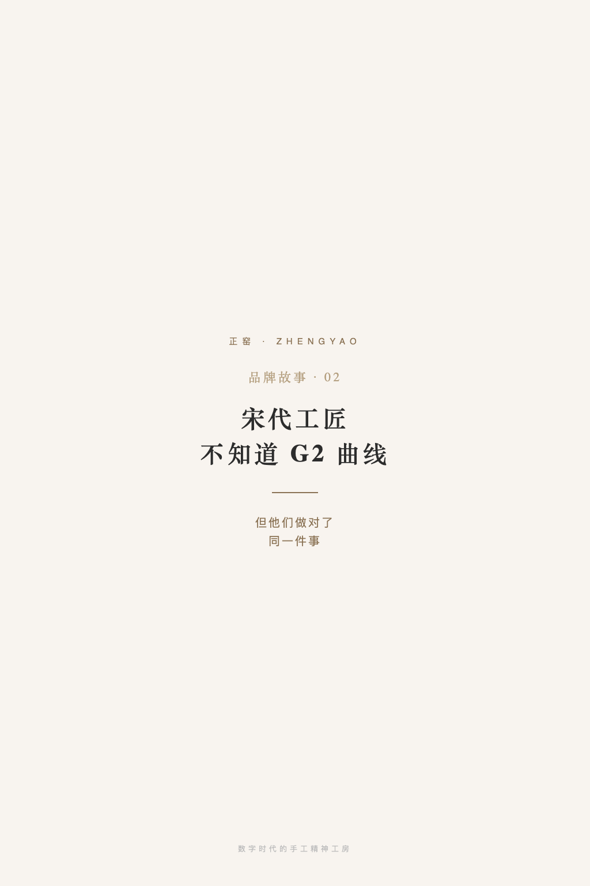
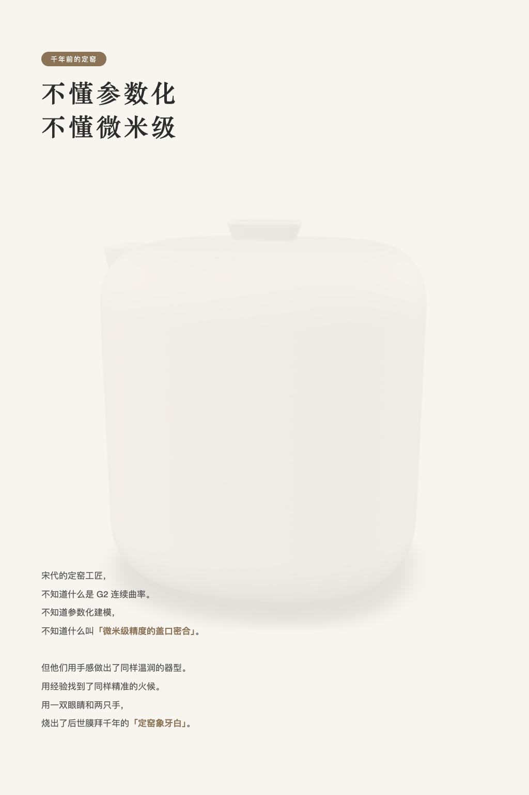
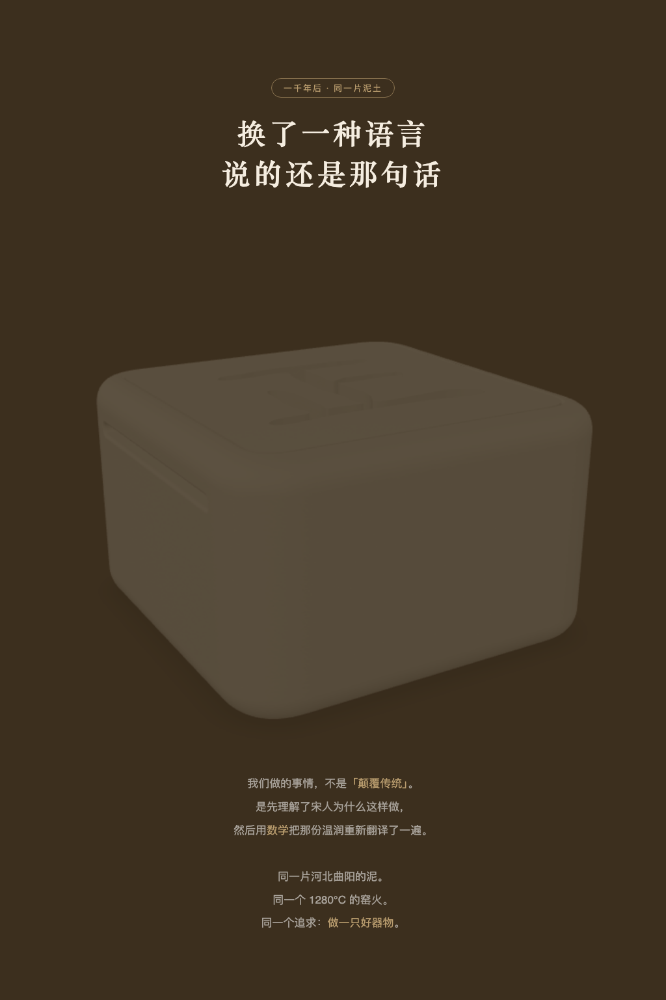
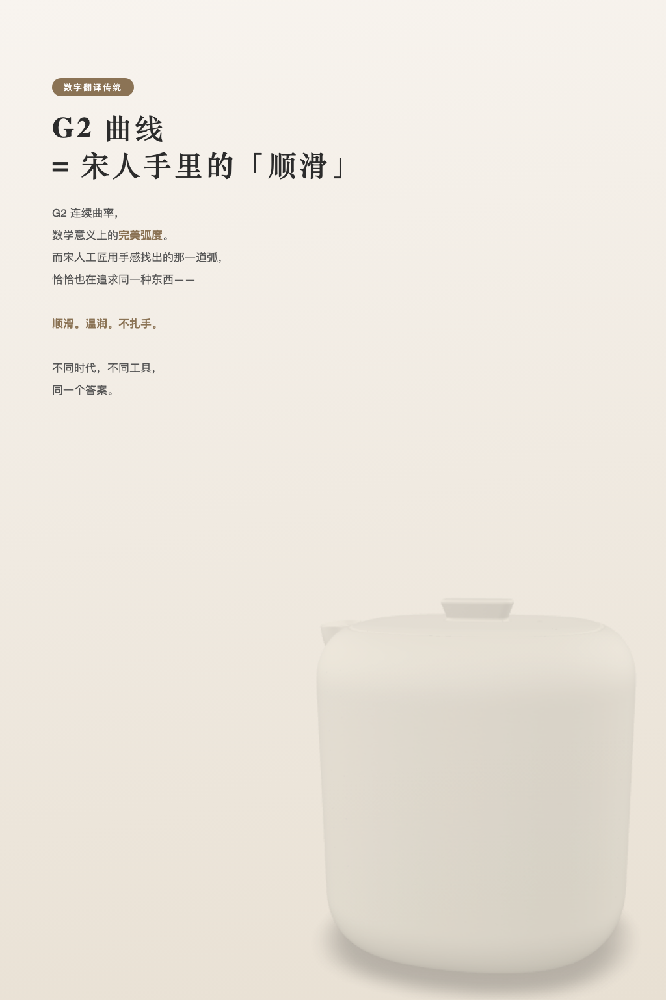
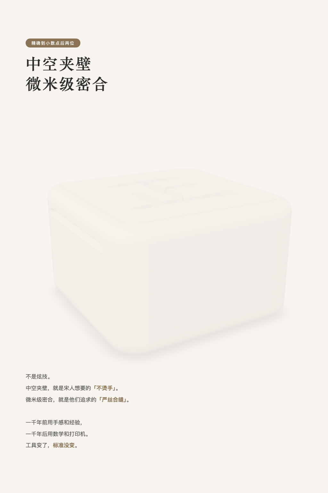
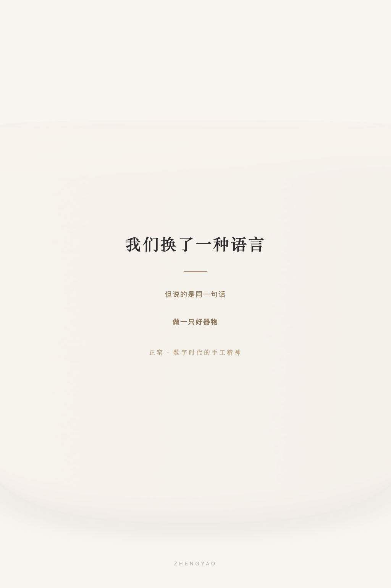

宋代工匠
不知道 G2 曲线
不知道 G2 曲线
但他们做对了
同一件事
同一件事
品牌故事 · 跨时空对话






宋代的定窑工匠，不知道什么是 G2 连续曲率。
他们不知道参数化建模，不知道中空夹层结构，不知道什么叫「微米级精度的盖口密合」。
但他们用手感做出了同样温润的器型。用经验找到了同样精准的火候。用一双眼睛和两只手，烧出了后世膜拜千年的「定窑象牙白」。
一千年后，同一片土地的同一种泥，来到了一块屏幕前。
我们做的事情，不是「颠覆传统」。是先理解了宋人为什么这样做，然后用数学把那份温润重新翻译了一遍。
G2 曲线，其实就是宋人手感里的「顺滑」。
中空夹壁，其实就是他们想要的「不烫手」。
微米级密合，其实就是他们追求的「严丝合缝」。
我们换了一种语言。
但说的是同一句话：做一只好器物。